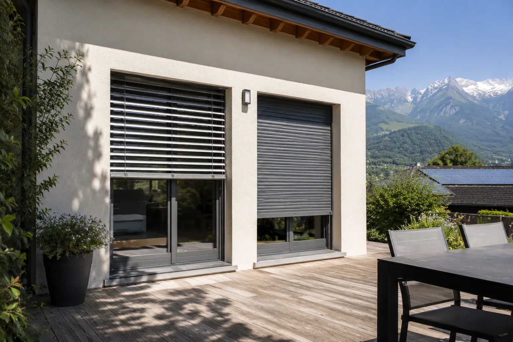

BSO ou volet roulant: quelle protection solaire choisir?
Comparer brise-soleil orientable et volet roulant pour gérer chaleur, lumière, intimité et sécurité.
Lire3 min
Volets, stores bannes, BSO, solaire, motorisation, coffre, chaleur et protection de façade.

Comparer brise-soleil orientable et volet roulant pour gérer chaleur, lumière, intimité et sécurité.
Exposition, batterie, moteur, entretien et cas de rénovation : quand le volet solaire est pertinent.
Filaire, radio ou solaire : ce que change vraiment la motorisation au quotidien.
Un comparatif simple pour arbitrer entre esthétique, protection solaire, sécurité et contraintes de pose.
Protection solaire, exposition, dimensions et durabilité : les critères utiles pour choisir un store banne.
Un guide pratique pour choisir entre branchement électrique, commande radio, capteurs et solution solaire.
Largeur, avancée, toile, coffre, vent et orientation : la méthode concrète pour cadrer un store banne.
Largeur, coffre, motorisation, toile, capteurs et pose : les facteurs qui expliquent les écarts de prix.